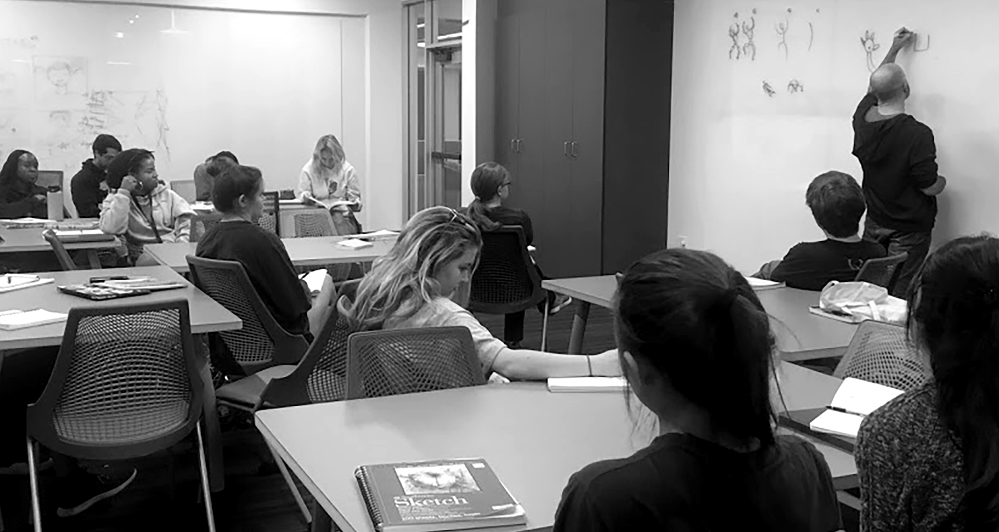

Teaching is one of the best ways to learn. I’ve always struggled with math - which is ironic considering I have a degree in Computer Science - but I found that tutoring others during my college years helped me conceptualize and practice difficult topics. I also discovered a genuine sense of joy while working with others to pick apart ideas and increase understanding.
The Center for Integrated Design is a forward-looking program open to all students that gives exposure to Design Thinking concepts. Courses span a variety of topics including artificial intelligence, prototyping, and research. A couple of years ago I was asked to give a talk on sketching that grew into an adjunct professor role teaching an Introduction to Computer Science course.
The CID is open to students from all backgrounds and fields of study, and this course is specifically designed for non-CS majors. Traditional Intro CS courses tend to be quite technical so my goal for this class is to provide a gentle introduction to selected topics and programming concepts.
When people hear the term “Computer Science” they usually think “writing code”, but it encompasses much more than that.
In addition to programming topics, I want students to leave this class with exposure to the evolution of computing hardware, a basic understanding of how hardware and software interact, and an appreciation for the ethical issues and societal impact this field of study has created.
📚 Course Material
Most of my students have no prior programming knowledge so I must make the most of every second I have with them. My experience as a designer and a developer has helped in tailoring content that is engaging and challenging, without being overwhelming. p5.js is my framework of choice because JavaScript is a forgiving language to learn from and it supports important beginning concepts I need to cover in class. p5 is based on Processing, a sketchbook-based framework that focuses on visuals and animation.
Learning the fundamentals of programming is an abstract endeavor. Examples are often canned in order to demonstrate a single concept, and it’s difficult to see how it gets applied in a real-world situation. My hope is that by pairing ideas such as logical operators, control flow, and data types to visual elements like colors, shapes, and animation the lessons are more engaging and understandable.
Choosing what to focus on, what to gloss over, and what to ignore is quite difficult and I rely on class feedback to refine my content every semester.